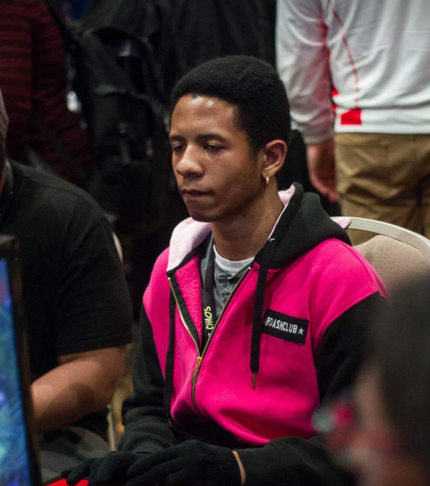

Music is something that fuels me. It is a very addictive and tantalizing. Often, I play trombone and it brings me happiness , excitement, and joy whenever I play. Overall, music is a fulfilling journey of emotion, sound, persistence, and learning.

Gaming is extremely entertaining in a multitude of ways. I love being competitive and sociable with friends. Mostly I play fighting games, mmos, and rpgs. There are a lot of hours I spend practicing and developing critical skills like hand-eye coordination, quick reflexes, problem-solving skills, and learning the ins and outs of a game.

Hiking is a venture I enjoy as well. It is a peaceful escape, whether, I trek the woods or spend time at a cabin with friends. There is a lot to do from camping outside, barbequing, and more. When I need to recharge or to re-center myself being out in nature does that for me.